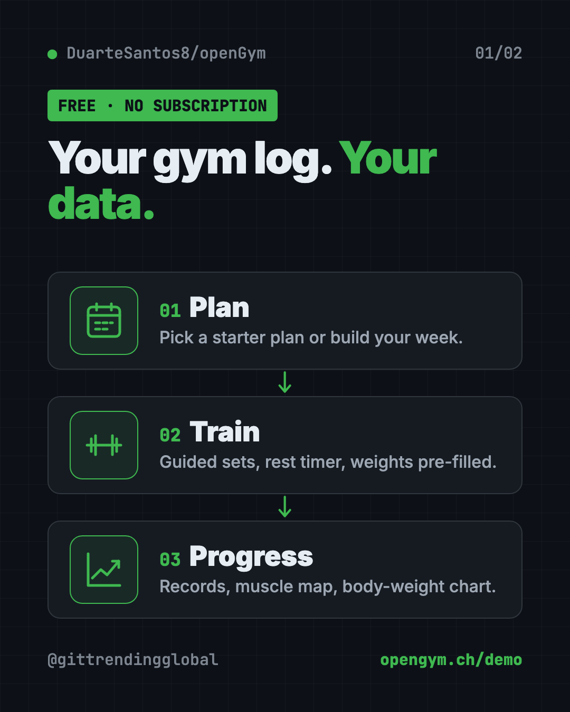
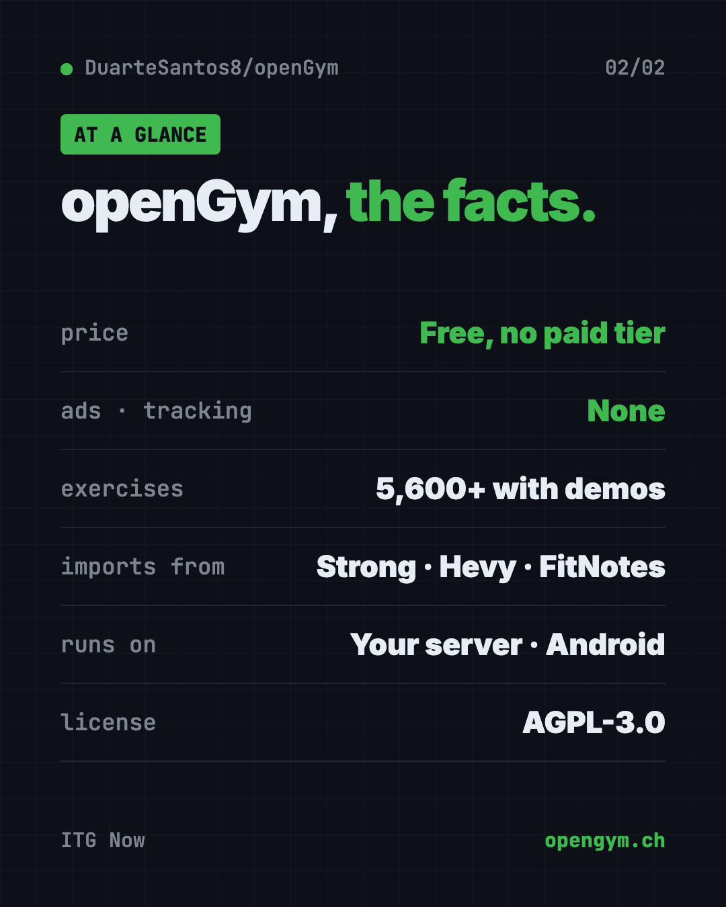

openGym: Free Workout Tracker App With No Subscription
- Published 15 Oct 2026
- Updated 16 Oct 2026
- 8 min read
- License AGPL-3.0
- By the ITG Now team
openGym is a free workout tracker app with no subscription, no ads and no tracking. You plan your week, follow guided sessions, log every set and your body weight, and your data stays on a computer you control.
There's also an Android app that keeps everything on your phone, and a live demo you can try in your browser first. Here's what it does, who it's for, and how to set it up.
Key takeaways
- Free forever. The makers say there's no paid tier and nothing held back for sponsors.
- You own your data. It runs on your own computer or server, or fully on your Android phone.
- Over 5,600 exercises with animated demos, searchable by muscle on a body map.
- Brings your history. Import from FitNotes, Strong, Hevy and Apple Health weight exports.
- About 12.2K stars on GitHub, under the AGPL-3.0 open-source license.
What is openGym?
Most workout apps follow the same pattern. The basics are free. The good stuff sits behind a subscription. Your training history lives on their servers. And if the company shuts down, years of logged workouts can vanish.
openGym flips that. The README calls it "a self-hosted gym and body-weight tracker you actually own." Self-hosted means you run it on your own machine, like a spare laptop, a small home server or a cheap rented one. Your phone and laptop then connect to it.
It still feels like a modern app. You can add it to your phone's home screen, sign in with Face ID or a fingerprint, and keep logging when you lose signal. It syncs when you're back.
It's built by developer Duarte Santos and shared on GitHub. There's a live demo with example data, so you can poke around before installing anything.

What can openGym do?
From the README, here are the highlights.
Planning:
- A routine for each weekday, or a simple A, B, C rotation if your week is messy.
- Four ready-made starter plans: Push/Pull/Legs, Upper/Lower, Full Body and 5×5.
- Filter exercises by the equipment you own.
- Supersets, warm-ups, drop sets, timed holds like planks, and cardio.
- Add your own exercises with your own photo or short video.
Training:
- Today's workout starts itself, with weights filled in from last time.
- A rest timer runs between sets. It can flash the screen for loud gyms.
- Personal records are spotted as you go.
- Plate math tells you which plates to load on the bar.
Progress:
- Smart progression rules suggest your next weight, and explain why.
- A muscle map shows what you trained, what's recovering and what you've skipped.
- A body-weight chart against your goal, plus progress photos with a before/after slider.
- A year-long activity heatmap.
It comes in 19 languages, including Arabic and Traditional Chinese.
How to use openGym (real examples)
- Ditch a paid app. Export your history from Strong or Hevy, import it, and keep every past workout.
- Start lifting as a beginner. Load the Full Body starter plan. openGym pre-fills weights and tells you when to add more.
- Train at home with little gear. Filter exercises by what you own, like dumbbells and a pull-up bar.
- Track a weight-loss goal. Log body weight daily and watch the chart move toward your goal line.
- Share a plan with a friend. Send it as a small file, or print it as a PDF for the gym wall.
💡 Tip: Try the live demo at opengym.ch/demo first. It's the real app with example data, so you'll know if you like it before you set anything up.
Is openGym really free?
Yes. The README says openGym "is free and stays free," with no paid tier. There's an optional coffee button if you want to support the maker.
Your only cost is where you run it. That could be a computer you already own. If you use the Android app on its own, there's no server at all.
The makers also say there's no account on someone else's server, no ads and no telemetry. Telemetry is the hidden usage data many apps send back to the company.
Does openGym have a phone app?
Yes, with a catch for iPhone users.
- Android: download the signed app file (an APK) from the GitHub releases page or the website. It works on its own, with no account and no server, and everything stays on the phone. The maker chose not to put it on the Play Store.
- iPhone: Apple doesn't allow installs outside the App Store. You can run openGym on your own server and add it to your home screen from Safari. Or, if you code, build it onto your own phone with Xcode.

How to install openGym with Docker
These are the steps from the README. You need Docker with Compose. Docker is a free tool that runs apps in neat, sealed boxes, so you don't have to install their parts one by one.
- Install Docker Desktop from docker.com.
- Open Terminal (Mac or Linux) or PowerShell (Windows).
- Copy and paste this:
git clone https://github.com/DuarteSantos8/openGym
cd openGym
cp .env.example .env
docker compose pull
docker compose up -d
- Open this address in your browser:
http://localhost:8080
- Tap Create profile, and you're in. The exercise animations are already included, so there's nothing else to download.
All your data lives in one folder called data. Back up that folder and you've backed up everything.
⚠️ Heads up: To use openGym from your phone with Face ID or fingerprint sign-in, it needs a secure web address (HTTPS) on a domain. The README calls it "a two-line change," and its self-hosting guide walks through options like Cloudflare Tunnel and Caddy.
Let Claude or Codex set it up for you
Claude Code and OpenAI Codex are AI helpers that can run setup steps on your computer. You paste a request, it does the steps, and you approve each one.
Copy and paste this:
Please help me set up openGym from github.com/DuarteSantos8/openGym.
1. Check if Docker is installed and running. If not, tell me how to get it.
2. Follow the README's quick start, explaining each command first.
3. Open http://localhost:8080 and confirm the app loads.
4. Show me where my data is stored and how to back it up.
5. Explain my options for using it on my phone.
Then try asking:
I want to reach openGym from my phone with passkeys. Walk me through the README's HTTPS options.
Help me export my workouts from Strong and import them into openGym.
Set up a weekly backup of my openGym data folder.
Does openGym have an AI coach?
Yes, but it's optional and off by default. The README says the app works fine with no AI at all.
If you turn the AI coach on, it drafts a week of routines and later suggests changes based on what you logged. You approve every change. It runs on your server with your own key from Anthropic, OpenAI, Gemini, or a local model through Ollama.
There's also an optional MCP server, a plug that lets an assistant like Claude Desktop answer questions about your training history. It's read-only and local.
openGym at a glance
| Price | Free, no paid tier |
| Works offline | Yes, it keeps working and syncs later |
| Platforms | Your own server via Docker; phone browser; Android app |
| License | AGPL-3.0 (open source) |
| GitHub stars | About 12.2K |
| Exercises | Over 5,600, with animated demos |
| Best for | Lifters who want a full tracker without a subscription |
Our take
openGym has the features of a premium gym app without the monthly bill. And because your data sits in one folder you control, nobody can take it away.
What we like:
- Free, with no ads, tracking or paid tier.
- Rich features: guided sessions, progression rules, muscle map, plate math.
- Imports from the big paid apps, so switching is painless.
- A live demo to try first.
- Clear, honest docs, including how the app is built with Claude Code.
What to watch for:
- The server setup needs Docker and some typing.
- Phone sign-in needs HTTPS, which is an extra step.
- No iPhone App Store version yet.
- The exercise animations have their own license, so they can't be reused freely outside openGym.
Like apps you fully own? See Project NOMAD, a free offline knowledge server, or Open Notebook, a private NotebookLM you run yourself. openGym was also in our trending GitHub repos for the week of October 5.
FAQ
Is openGym a free workout tracker app?
Yes. openGym is free and open source, with no subscription, no ads and no paid tier.
Can I import my workouts from Strong or Hevy?
Yes. openGym imports from FitNotes, Strong and Hevy, plus Apple Health weight exports.
Does openGym work on iPhone?
Not from the App Store. You can run it on your own server and add it to your iPhone's home screen from Safari.
Do I need a server to use openGym?
Not on Android. The Android app works on its own, with everything kept on your phone. For syncing across devices, you run it on your own server with Docker.
Does openGym send my data anywhere?
The makers say no. There's no telemetry, and your data lives in a folder you control. The optional AI coach only talks to the provider you set up.
Get openGym: github.com/DuarteSantos8/openGym
Keep reading

VoiceStudio: Free ElevenLabs Alternative
VoiceStudio is a free ElevenLabs alternative. Clone a voice, dub videos and turn text into speech on your own Mac, Windows or Linux computer.

Folia: Free Animated Lyrics Music Player
Folia is a free animated lyrics music player that shows full-screen moving lyrics for your local music, Navidrome and more. What it does and how to start.

net-merge: Combine Wi-Fi and Phone Internet, Free
net-merge is a free app to use two internet connections at once, like Wi-Fi plus a phone hotspot, on Windows, Mac and Linux. No account or VPN.